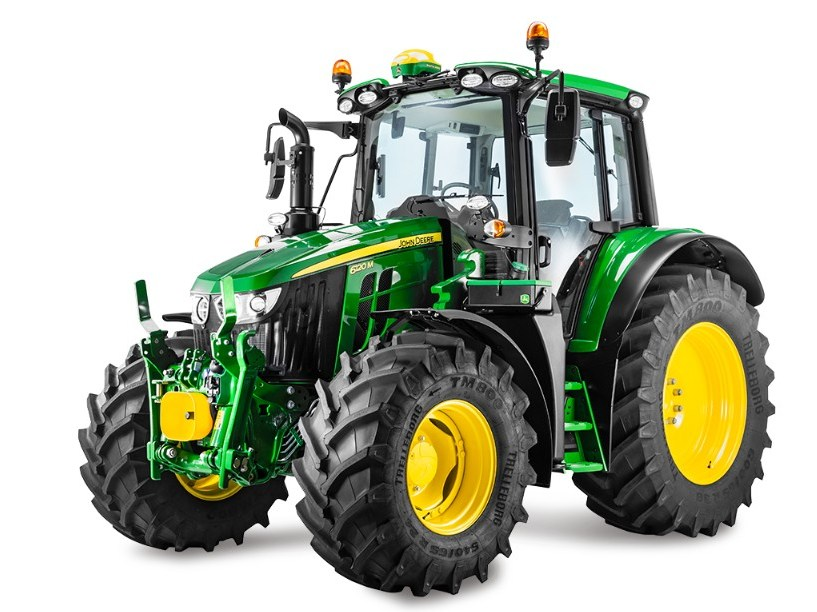

John Deere 6110M

Трактор John Deere 6110M — це універсальна повнопривідна машина середньої потужності, розроблена для фермерських господарств, які потребують надійності та маневреності. Завдяки компактній колісній базі та міцній рамі, трактор ідеально підходить для роботи з фронтальними навантажувачами, догляду за посівами та виконання транспортних завдань.
Кабіна забезпечує відмінну оглядовість та ергономічне розташування органів керування, що робить цей трактор ефективним інструментом як для тваринництва (заготівля кормів), так і для рослинництва на малих і середніх площах.
| Параметр | Значення |
|---|---|
| Клас тяги | 1,4 — 2,0 |
| Тип ходової частини | колісний |
| Колісна формула | 4х4 (4WD) |
| Тип рами | повнорамна конструкція (Unique Steel Full Frame) |
| Основне призначення | універсально-просапні роботи, тваринництво, кормовиробництво, робота з фронтальним навантажувачем |
| Параметр | Значення |
|---|---|
| Модель | John Deere PowerTech™ PSS |
| Тип двигуна | 4-циліндровий, турбодизель, Common Rail, система SCR (AdBlue) |
| Спосіб охолодження | рідинне |
| Розташування циліндрів | рядне, вертикальне |
| Діаметр циліндра/хід поршня | 106 мм / 127 мм |
| Робочий об’єм | 4,5 л (4500 см³) |
| Номінальна потужність | 81 кВт (110 к.с.) / Макс: 116 к.с. |
| Номінальні оберти | 2100 об/хв |
| Система пуску | електростартер |
| Питома витрата палива | 205–215 г/кВт·год |
| Параметр | Значення |
|---|---|
| Муфта зчеплення | мокра багатодискова (PermaClutch™ 2) з масляним охолодженням |
| Тип КПП | PowrQuad™ Plus або AutoQuad™ Plus (24/24) |
| Кількість передач | 24 вперед / 24 назад (стандарт) |
| Кількість діапазонів | 6 діапазонів (A, B, C, D, E, F) по 4 передачі в кожному |
| Діапазон швидкостей (вперед) | 1,5 – 40,0 км/год |
| Діапазон швидкостей (назад) | 1,5 – 40,0 км/год |
| Вал відбору потужності | незалежний, 540 / 540E / 1000 об/хв |
| Діапазон | Передача | Швидкість, км/год | Передаточне число | Тягове зусилля, кН |
|---|---|---|---|---|
| A (Low) | 1 | 1,60 | 408,2 | 52,20 |
| A (Low) | 2 | 1,90 | 343,7 | 52,20 |
| A (Low) | 3 | 2,30 | 283,9 | 52,20 |
| A (Low) | 4 | 2,80 | 233,2 | 52,20 |
| B | 1 | 3,30 | 197,9 | 48,50 |
| B | 2 | 4,00 | 163,3 | 40,00 |
| B | 3 | 4,90 | 133,3 | 32,70 |
| B | 4 | 6,00 | 109,1 | 26,70 |
| C (Medium) | 1 | 5,20 | 125,6 | 30,80 |
| C (Medium) | 2 | 6,30 | 103,7 | 25,40 |
| C (Medium) | 3 | 7,70 | 84,8 | 20,80 |
| C (Medium) | 4 | 9,40 | 69,5 | 17,00 |
| D | 1 | 8,20 | 79,6 | 19,50 |
| D | 2 | 10,00 | 65,3 | 16,00 |
| D | 3 | 12,20 | 53,5 | 13,10 |
| D | 4 | 14,90 | 43,8 | 10,70 |
| E (High) | 1 | 13,10 | 49,8 | 12,20 |
| E (High) | 2 | 15,90 | 41,1 | 10,10 |
| E (High) | 3 | 19,40 | 33,7 | 8,20 |
| E (High) | 4 | 23,70 | 27,6 | 6,70 |
| F | 1 | 22,10 | 29,5 | 7,20 |
| F | 2 | 26,90 | 24,3 | 5,90 |
| F | 3 | 32,80 | 19,9 | 4,90 |
| F | 4 | 40,00 | 16,3 | 4,00 |
| Параметр | Значення |
|---|---|
| Тип коліс | пневматичні шини (радіальні) |
| Марка шин | передні: 380/85 R24; задні: 460/85 R38 (базові) |
| Радіус ведучого колеса | 0,865 м (для задніх коліс 460/85 R38) |
| Кількість коліс | 4 |
| Ведучі мости | обидва (передній міст з підвіскою TLS™ Plus) |
| Режим | Витрата |
|---|---|
| Під час роботи з навантаженням | 15,5 – 19,5 кг/год |
| Під час холостих переїздів | 6,5 – 8,5 кг/год |
| Під час зупинок (холостий хід) | 1,4 – 2,0 кг/год |
| Параметр | Значення |
|---|---|
| Маса експлуатаційна | 5800 кг (залежно від комплектації) |
| Довжина / Ширина / Висота | 4327 мм / 2490 мм / 2800 мм |
| Колія / База | 1550–2050 мм / 2400 мм (коротка база) |
| Дорожній просвіт | 460 мм |
| Мінімальний радіус повороту | 4,35 м |
| Об’єм паливного баку | 175 л (бак AdBlue — 19 л) |
| Параметр | Значення |
|---|---|
| Особливості кабіни | оновлена кабіна 6M, панорамне скління, рівень шуму 70 дБа, сенсорний дисплей на кутовій стійці |
| Гальма | робочі — мокрі дискові з гідравлічним приводом; стоянкові — інтегровані в трансмісію |
| Начіпний пристрій | задній триточковий (Кат. III/II), вантажопідйомність — 4350 кг (опційно до 5700 кг) |